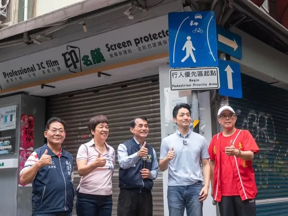
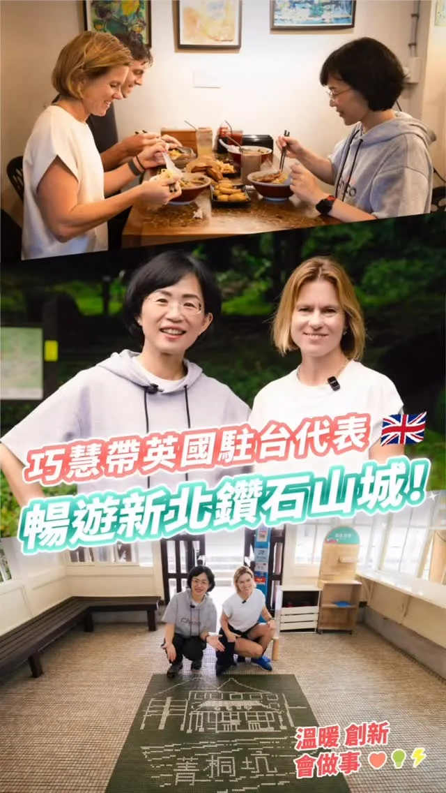
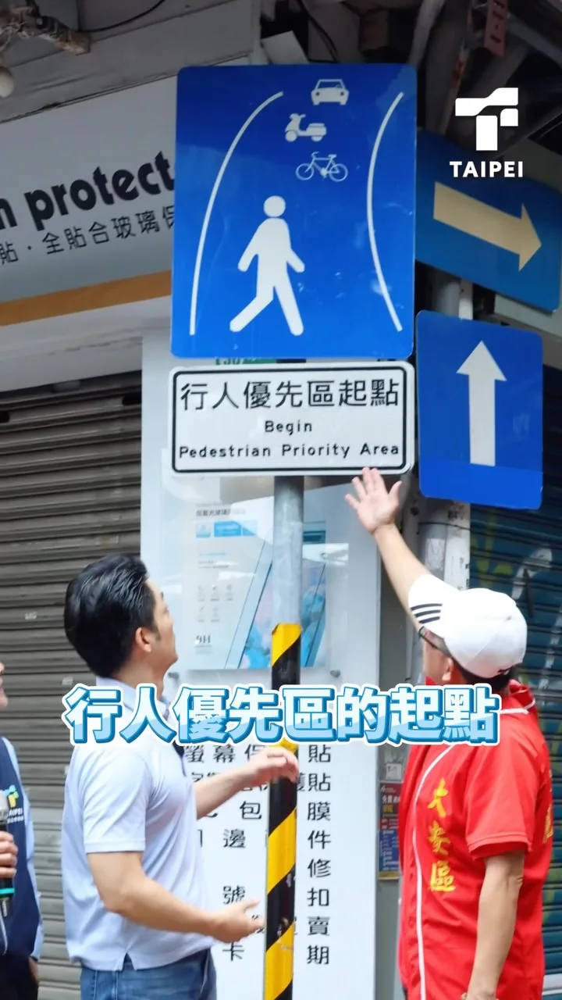

MAYOR2026.OBSERVE.TW
整理臺北、新北、桃園、臺中、臺南、高雄市長候選人的官方公開發文，跨平台合併時間軸與議題比例。
Six Municipalities
最後更新 2026-09-18 11:57
Latest


@zenolai:台北、高雄，一北一南，一座是臺灣首都、國際都會，一座是海洋首都、南方門戶。兩座引領臺灣向前的重要城市，有著截然不同的性格。這次邀請PUMA來到高雄，就是要帶他感受南臺灣的熱情與魅力。 英雄路，串起高雄不同時代的城市記憶。過去，前往金門、馬祖服役的軍人，順著英雄路走向光榮碼頭，啟程捍衛臺灣；六年前，高雄市民也曾在英雄路上相聚，為民主自由發聲。不同的時代、同樣的地方，英雄路始終承載著高雄人守護臺灣的堅定信念。 如今同樣的港灣，已轉型成為高雄璀璨的亞洲新灣區；矗立於光榮碼頭的高雄流行音樂中心，充滿音樂、展演，榮耀這座城市的蛻變。從昔日港區到今日城市水岸，英雄路見證了高雄的過去與現在，也見證這座城市脫胎換骨。

上次和PUMA合唱我喜歡你，這次到青年論壇再唱一次，我有沒有進步？🎤


和英國駐台代表 @rutheybj #包瓊郁 Ruth Bradley-Jones一起在 #平溪 爬山！ 聽說 @britishofficetaipei #英國在台辦事處 代表 Ruth 非常熱愛戶外健行，這次我特別邀請她一起挑戰平溪 #孝子山，我們也搭乘火車到菁桐老街走走、吃美食！ 新北多元美麗的山林，是我們的寶藏。未來我會透過 #鑽石山城 觀光計畫，把新北的山林美景推向國際，讓新北成為大家一生必訪的城市。

＃十大新政全面升級 ＃交通三箭打通路網 🏹捷運十字路網： 台南是六都唯一還沒有捷運的城市。首條捷運藍線最快年底動工；今年3月，串聯台南東西，連通安平、台南車站、成大、永康等重要生活圈的捷運綠線，也已通過「可行性研究」，台南捷運建設正一步步上軌道。 龍介上任後，將全力推動藍線盡速開工、如期完工，加速綠線後續規劃，讓台南捷運十字路網早日成形，串聯東西、南北重要生活圈，發揮最大交通效益，讓市民通勤更方便，帶動沿線地方發展。 🏹交通建設加速： 台南北外環快速道路分期興建，目前第4期工程正進行用地取得及細部設計，全線預計2031年完工。 龍介上任後，將全力協調中央加速工程進度，讓北外環早日全線通車，串聯南科、樹谷園區、國道1號與台南市區，打通南科往返市區的重要交通動脈，分散車流、改善壅塞。 道路要打通，大眾運輸也要一起升級。我將全面檢視台南公車路網，增加市區主要幹線班次，改善久候、轉乘不便等問題；並依各行政區人口、就業就學需求，增設更多「都會公車」路線，補足台南長距離大眾運輸的不足。 人行環境同樣不能忽略。台南許多舊市區道路狹窄、人行空間不足，人車爭道的情形天天都在發生。4年前，龍介就提出「廣設綠色人行道」；這項政策既然重要，4年後不只要繼續做，更要做得更多、更完整。 針對缺乏實體人行道、又難以拓寬路段，規劃綠色人行道，清楚區隔人車動線，優先改善學校、市場、醫院及人流密集路段，讓孩子上學、長輩出門、市民走路，都能多一分安全，把安心行走空間還給市民。 🏹整頓交通亂象： 針對酒駕毒駕，龍介主張鐵腕取締，絕不寬貸，尤其台南日益嚴重的毒駕問題，對任何危害用路人生命安全的行為，不能輕輕放過。 該抓的要抓，不合理的罰單也要檢討。龍介上任，要檢視交通執法與罰單合理性，針對容易誤闖、標線不清、號誌設計不合理的路段主動改善，不能道路設計有問題，卻叫市民一直繳罰單。 同時，全面盤點台南高風險路口及事故熱點，依事故頻率、行人流量與道路條件分級改善，優化路型與號誌配置，並增設行人庇護島、行人穿越線退縮、轉角防撞及照明設備，從道路設計源頭降低事故風險。 台南的交通問題，不是一天造成，也不是多畫幾條標線、多裝幾支號誌，就能真正解決。 數字會講話。2024年台南公共運輸市占率只有4.9%，遠低於全國平均15.2%，更是六都最後；私人運具市占率卻高達85.1%，每百戶擁有184.37輛機車，六都僅次於高雄。 不是台南人不願意搭公共運輸，而是現有公車不夠方便、不夠密集，也不夠可靠。當鄉親出門只能騎車、開車，壅塞、人車爭道與交通事故自然跟著來。 2025年台南交通事故達43,959件，六都第三高；每10萬人事故死傷數更達3,209人，六都最後、全國倒數第二。這些數字都提醒我們，台南交通不能再頭痛醫頭、腳痛醫腳。 龍介提出「交通三箭」，要從根本改善。交通建設要加速、公車路網要升級，道路與人行環境也要一起改善；酒駕毒駕嚴辦，危險路口、錯誤號誌也要從源頭處理。 台南交通不能永遠吊車尾，鄉親每天出門，也不能每天攏咧驚。龍介要用「以人為本」的交通思維，讓人有路行、車有路走，打造一座老人囝仔都能安心出門的城市。


@a_chun1973:明天見。


人本交通，走進臺北的日常 前幾天，我來到師大生活圈，實地視察 #行人友善區 的推動成果。 過去，這裡長期面臨人車爭道、行人空間不足、車速過快等問題。擔任立委時，我曾和在地里長一起站在路口，觀察人車通行的情形，討論道路該怎麼調整，才能讓居民走得更安心。 上任後，臺北隊持續走進街區、傾聽地方聲音。 去年2月，我到現場聽取里長及居民的意見；同時，也參考國外經驗，從行人的角度重新思考道路空間。從改善標線、調整動線，到導入創新措施，一步一步解決長期存在的問題。 隨著今年7月，古風里行人友善區正式完工，也為整個師大生活圈行人友善區拼上最後一塊拼圖。這次再次回到現場，我也實際走了一遍，了解改善後的使用情形，以及居民最真實的感受。 除了改善步行環境，我們也持續串聯綠色運具。 我上任後恢復YouBike前30分鐘免費，政策上路以來，使用量成長67%、滿意度達94.7%，累積租借次數也將在這個月底突破5億次。 對許多市民來說，YouBike不只是一輛自行車，更是上班、上學、買菜或轉乘大眾運輸時，最方便的「最後一哩路」。 很高興師大生活圈的改善不只獲得在地居民肯定，更吸引臺北許多里、甚至外縣市也到訪觀摩、交流。 好的改變，可以從一個街區開始，逐步成為整座城市的日常。 臺北市會持續推動人本交通，讓城市的每一段路，都更安全、更便利，也更有人情味。

明天和美鳳姐有約，一起看見高雄的美！📺✨ 這次我和美鳳姐、小鹿、阿甘走訪亞洲新灣區，欣賞港灣風景，聊聊高雄這些年的轉變！ 明天記得打開電視，跟著《美鳳有約》感受高雄的熱情與魅力！ 📍9/18（五）播出時間 ▪️民視第一台（第151台）10:30首播 ▪️民視無線台（第6台）12:30首播、17:30重播

巧慧的 #山友後援會 正式成立！ 新北有最豐富的山林和海洋資源，未來我會為新北的山林步道 #分級分眾，增加大眾運輸班次， #縮短大眾登山轉乘的時間；同時將登山活動與老街商圈、歷史人文景點共同串聯，結合登山也 #振興地方商圈。最後，我也會 #打造山林教育中心，作為山友的集訓場地，真正向山致敬。 未來我擔任市長，會從各方面縮短交通接駁、升級硬體設施，打造「新北大縱走」品牌，讓台灣的孩子越來越喜歡山，越來越懂得敬山，越來越親近山！ 謝謝愛爬山的 @tsai_ingwen 小英總統和我成立山友後援會！

原本受邀到台中海線，為何欣純加油打氣的 蕭美琴 Bi-khim Hsiao 副總統，受到國際社會邀請，必須出國為台灣拚外交，所有鄉親都高度肯定支持！ 這個周六9/19，感謝美琴副總統，再次來到台中屯區，阿純誠摯邀請鄉親好朋友，作伙來給美琴副總統鼓勵、逗陣相挺何欣純、為台中加油！ 🕤️時間：9/19（六）上午9：30 🌏️地點：大里新興宮(八媽廟)大里區新仁路2段162號

海外台商挺巧慧！一起把新北打造成 #希望之城！ 今天來自世界各地的台商、台僑朋友們齊聚在一起，為我成立「海外台商後援會」，謝謝大家特別回到台灣，在忙碌的行程中撥出時間為我加油！ 未來，我要讓新北變得有趣、友善、有機會！讓更多的海外青年看見新北的山海與地方的故事，並且在這裡找到好的工作、創業與投資的機會，將新北市打造成聯結世界的起點！ 我會繼續努力，讓台灣成為大家的底氣，把新北打造成一座海外年輕人願意回來、也能看見未來的希望之城！

一早回到最熟悉的 #東勢本街市場，被鄉親滿滿的熱情徹底融化！ 沿途「凍蒜」與加油聲沒停過，更有熱情鄉親直接上前給啟臣一個大大的擁抱，直說：「一定要當選！」 最讓我感動的，是一位86歲的阿嬤，她緊握著我的手，小心翼翼拿出一件件珍藏多年的合照與宣傳小物，像翻開一本記錄啟臣打拚歷程的相簿，期盼我「更上一層樓」為全臺中服務。看著阿嬤眼裡的信任，那份重量，啟臣永遠放在心上。 山城是我的家，從 #國四豐潭段 到全力推進的 #東豐快，有大家的溫暖作後盾，我們一起衝，讓山城更好、臺中全面升級！ #臺中啟程 #打造旗艦城

@su.chiaohui:和英國駐台代表包瓊郁 Ruth Bradley-Jones 一起在平溪爬山！


小英總統開箱妃熊幸福競選總部！台灣第一女總統力挺台南第一女市長陳亭妃！

@schuanglawyer:桃園的市民朋友早安☀️ 我正在民族公園前，跟大家揮手問好！


城市交流，讓經驗彼此加乘 今天 劉建國 委員來到台南做市政交流，亭妃與黃偉哲市長一起出席，從小黃公車、國產豆奶、親子悠遊館等議題交換意見，藉著分享黃偉哲市長台南的實務經驗，也聽聽雲林未來劉縣長的想法與做法。 城市進步沒有標準答案，透過交流彼此學習，把好的經驗帶回地方，讓台南、雲林一起更好！ #陳亭妃 #市政交流 #經驗分享 #台南雲林一起努力

巧慧的 #山友後援會 正式成立！ 新北有最豐富的山林和海洋資源，未來我會為新北的山林步道 #分級分眾，增加大眾運輸班次， #縮短大眾登山轉乘的時間；同時將登山活動與老街商圈、歷史人文景點共同串聯，結合登山也 #振興地方商圈。最後，我也會 #打造山林教育中心，作為山友的集訓場地，真正向山致敬。 未來我擔任市長，會從各方面縮短交通接駁、升級硬體設施，打造「新北大縱走」品牌，讓台灣的孩子越來越喜歡山，越來越懂得敬山，越來越親近山！

明天和美鳳姐有約，一起看見高雄的美！📺✨ 這次我和美鳳姐、小鹿、阿甘走訪亞洲新灣區，欣賞港灣風景，聊聊高雄這些年的轉變！ 明天記得打開電視，跟著《美鳳有約》感受高雄的熱情與魅力！ 📍9/18（五）播出時間 ▪️民視第一台（第151台）10:30首播 ▪️民視無線台（第6台）12:30首播、17:30重播

Building the New Taipei Grand Trail: A Mountain Hiking Brand⛰️

@su.chiaohui:海外台商挺巧慧！一起把新北打造成希望之城！ 今天來自世界各地的台商、台僑朋友們齊聚在一起，為我成立「海外台商後援會」，謝謝大家特別回到台灣，在忙碌的行程中撥出時間為我加油！ 未來，我要讓新北變得有趣、友善、有機會！讓更多的海外青年看見新北的山海與地方的故事，並且在這裡找到好的工作、創業與投資的機會，將新北市打造成聯結世界的起點！ 我會繼續努力，讓台灣成為大家的底氣，把新北打造成一座海外年輕人願意回來、也能看見未來的希望之城！

#讓世界看見臺中！🌏 本週，「世界不動產聯合會國際貿易交流會」與「第十屆全球城市旅遊發展組織論壇」兩大國際會議雙雙在臺中登場！ 臺中擁有海空雙港優勢與強勁的經濟動能。不動產交流讓全球菁英見證城市的建設突破；旅遊論壇則聚焦「永續觀光與智慧旅遊」，結合豐富自然景致、步道與在地美食，推動人與環境共好。 兼具產業實力與觀光魅力的臺中，是商務交流與旅遊的最佳首選。邀請大家一同感受 #國際旗艦城 的無限魅力！✨ #臺中啟程 #打造旗艦城 #臺中味 #永續旅遊

台北、高雄，一北一南，一座是臺灣首都、國際都會，一座是海洋首都、南方門戶。兩座引領臺灣向前的重要城市，有著截然不同的城市性格。這次邀請PUMA來到高雄，就是要帶他感受南臺灣的熱情與魅力。 英雄路，串起高雄不同時代的城市記憶。過去，前往金門、馬祖服役的軍人，順著英雄路走向光榮碼頭，啟程捍衛臺灣；六年前，高雄市民也曾在英雄路上相聚，為民主自由發聲。不同的時代、同樣的地方，英雄路始終承載著高雄人守護臺灣的堅定信念。 如今同樣的港灣，已轉型成爲高雄璀璨的亞洲新灣區；矗立於光榮碼頭的高雄流行音樂中心，充滿音樂、展演，榮耀這座城市的蛻變。從昔日港區到今日城市水岸，英雄路見證了高雄的過去與現在，也見證這座城市脫胎換骨。 台北被群山環繞，發展出豐富的登山步道與城市縱走，PUMA說他要用運動驛站串聯大台北天際線，打造東亞第一登山城；而港灣就是生活風景的高雄自由開闊，愛河與海相連，創造極佳的水上運動環境，形塑出高雄海洋城市的性格與特性。 來到高雄，不能錯過水岸生活體驗！這禮拜六我邀請沈伯洋一起滑SUP ，我們不只要比誰能撐到最後，還要一起承擔重任，南北串連、山海相應，做市民的Support！
Qiaohui Takes the British Representative to Taiwan on a Tour of New Taipei's Mountain Town! ft. R...

@hsiehlungchieh:＃十大新政全面升級 ＃交通三箭打通路網 🏹捷運十字路網： 台南是六都唯一還沒有捷運的城市。首條捷運藍線最快年底動工；今年3月，串聯台南東西，連通安平、台南車站、成大、永康等重要生活圈的捷運綠線，也已通過「可行性研究」，台南捷運建設正一步步上軌道。 龍介上任後，將全力推動藍線盡速開工、如期完工，加速綠線後續規劃，讓台南捷運十字路網早日成形，串聯東西、南北重要生活圈，發揮最大交通效益，讓市民通勤更方便，帶動沿線地方發展。 🏹交通建設加速： 台南北外環快速道路分期興建，目前第4期工程正進行用地取得及細部設計，全線預計2031年完工。 龍介上任後，將全力協調中央加速工程進度，讓北外環早日全線通車，串聯南科、樹谷園區、國道1號與台南市區，打通南科往返市區的重要交通動脈，分散車流、改善壅塞。 道路要打通，大眾運輸也要一起升級。我將全面檢視台南公車路網，增加市區主要幹線班次，改善久候、轉乘不便等問題；並依各行政區人口、就業就學需求，增設更多「都會公車」路線，補足台南長距離大眾運輸的不足。 人行環境同樣不能忽略。台南許多舊市區道路狹窄、人行空間不足，人車爭道的情形天天都在發生。

桃園的市民朋友早安☀️ 我正在民族公園前，跟大家揮手問好！

人本交通，走進臺北的日常 前幾天，我來到師大生活圈，實地視察 #行人友善區 的推動成果。 過去，這裡長期面臨人車爭道、行人空間不足、車速過快等問題。擔任立委時，我曾和在地里長一起站在路口，觀察人車通行的情形，討論道路該怎麼調整，才能讓居民走得更安心。 上任後，臺北隊持續走進街區、傾聽地方聲音。 去年2月，我到現場聽取里長及居民的意見；同時，也參考國外經驗，從行人的角度重新思考道路空間。從改善標線、調整動線，到導入創新措施，一步一步解決長期存在的問題。 隨著今年7月，古風里行人友善區正式完工，也為整個師大生活圈行人友善區拼上最後一塊拼圖。這次再次回到現場，我也實際走了一遍，了解改善後的使用情形，以及居民最真實的感受。 除了改善步行環境，我們也持續串聯綠色運具。 我上任後恢復YouBike前30分鐘免費，政策上路以來，使用量成長67%、滿意度達94.7%，累積租借次數也將在這個月底突破5億次。 對許多市民來說，YouBike不只是一輛自行車，更是上班、上學、買菜或轉乘大眾運輸時，最方便的「最後一哩路」。 很高興師大生活圈的改善不只獲得在地居民肯定，更吸引臺北許多里、甚至外縣市也到訪觀摩、交流。 好的改變，可以從一個街區開始，逐步成為整座城市的日常。 臺北市會持續推動人本交通，讓城市的每一段路，都更安全、更便利，也更有人情味。
@zenolai:明天和美鳳姐有約，一起看見高雄的美！📺✨ 這次我和美鳳姐、小鹿、阿甘走訪亞洲新灣區，欣賞港灣風景，聊聊高雄這些年的轉變！ 明天記得打開電視，跟著《美鳳有約》感受高雄的熱情與魅力！ 📍9/18（五）播出時間 ▪️民視第一台（第151台）10:30首播 ▪️民視無線台（第6台）12:30首播、17:30重播

@su.chiaohui:巧慧的山友後援會⛰️ 正式成立！ 新北有最豐富的山林和海洋資源，未來我擔任市長，會從各方面縮短交通接駁、升級硬體設施，打造「新北大縱走」品牌，讓台灣的孩子越來越喜歡山，越來越懂得敬山，越來越親近山！

忠孝路夜市巧遇老字號青草茶！阿純一喝繼續活力滿滿🌿

海外台商挺巧慧！一起把新北打造成 #希望之城！ 今天來自世界各地的台商、台僑朋友們齊聚在一起，為我成立「海外台商後援會」，謝謝大家特別回到台灣，在忙碌的行程中撥出時間為我加油！ 未來，我要讓新北變得有趣、友善、有機會！讓更多的海外青年看見新北的山海與地方的故事，並且在這裡找到好的工作、創業與投資的機會，將新北市打造成聯結世界的起點！ 我會繼續努力，讓台灣成為大家的底氣，把新北打造成一座海外年輕人願意回來、也能看見未來的希望之城！

#讓世界看見臺中！🌏 本週，「世界不動產聯合會國際貿易交流會」與「第十屆全球城市旅遊發展組織論壇」兩大國際會議雙雙在臺中登場！ 臺中擁有海空雙港優勢與強勁的經濟動能。不動產交流讓全球菁英見證城市的建設突破；旅遊論壇則聚焦「永續觀光與智慧旅遊」，結合豐富自然景致、步道與在地美食，推動人與環境共好。 兼具產業實力與觀光魅力的臺中，是商務交流與旅遊的最佳首選。邀請大家一同感受 #國際旗艦城 的無限魅力！✨ #臺中啟程 #打造旗艦城 #臺中味 #永續旅遊